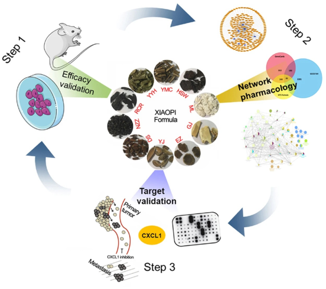
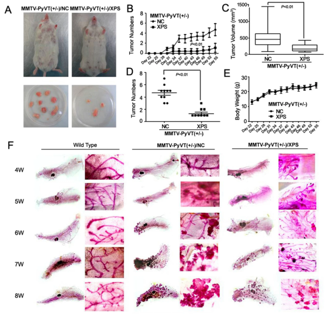
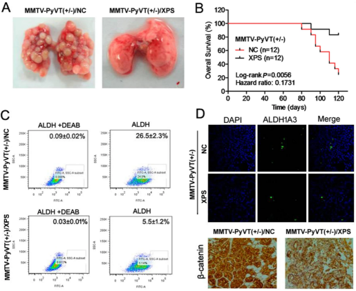
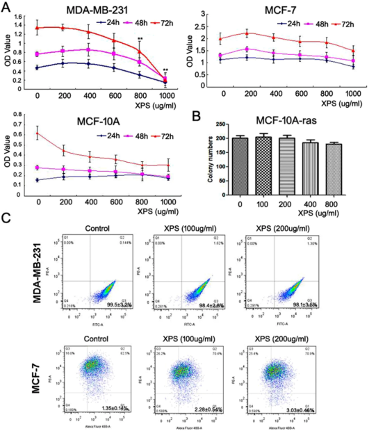
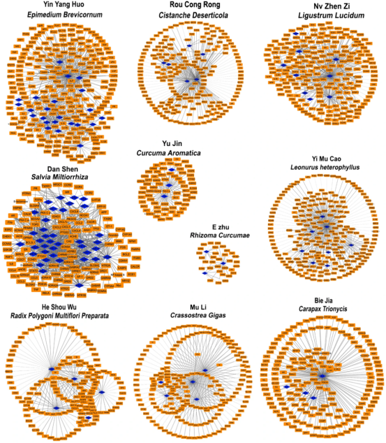
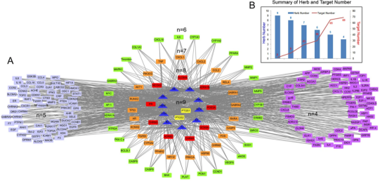
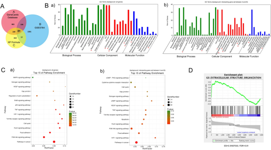
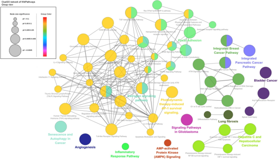
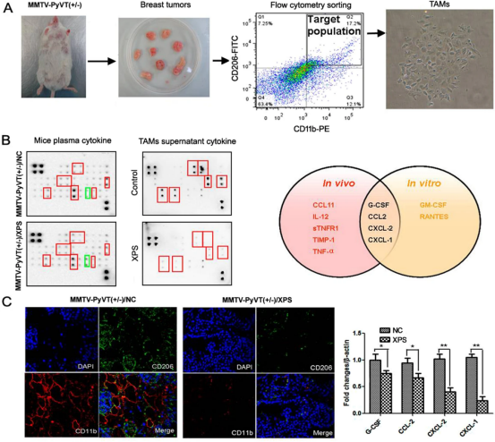
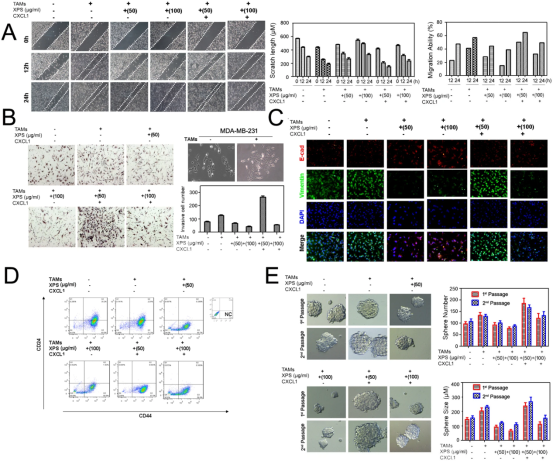

基于网络药理学的TAMS/CXCL-1验证是消癖颗粒预防乳腺癌发生和转移的关键介质
王能1，2, 郑轶枫1，2，3, 古江勇1, 蔡友丽1，2, 王胜奇1，2，3, 张奉学2, 陈建萍4, 司徒红林1，2，林毅1，2，王志宇1，2，3
DOI https://doi.org/10.1038/s41598-017-15030-3
Scientific Reports ( IF 4.379 )
引言
网络药理学已经成为了解中药在癌症治疗中作用机理的有力手段。这项研究旨在验证临床处方消癖颗粒对乳腺癌的预防作用和分子机制。
体内乳腺癌异种移植数据显示，消癖颗粒可以延缓乳腺癌的发展并有效抑制肺转移，并具有延长生存期和减少癌症干细胞亚群的作用。
但是，在细胞模型中未观察到类似现象。中药成分靶向网络分析进一步确定了总共81个与消癖颗粒的乳腺癌化疗预防作用密切相关的基因。细胞因子阵列分析进一步验证了CXCL-1无论是在体内还是体外都作为消癖颗粒的关键靶点。
对该机制的评估表明，CXCL-1的使用显著消除了消癖颗粒对乳腺癌转移、侵袭、干细胞亚群、上皮间质转化（EMT）或乳腺微球形成能力的抑制作用。
总的来说，我们的研究提供了实验证据和分子机制，可以促进安全有效地使用中药预防乳腺癌的生长或转移，并可能发现基于CXCL-1的乳腺恶性肿瘤治疗策略。
乳腺癌是美国女性中最常见的恶性肿瘤，约占癌症的三分之一。据估计，2017年美国有乳腺癌病史的女性将超过280万【1】。新发乳腺癌病例达到255180例，死亡高达410702例【2】。乳腺癌还是全世界184个国家中就有140个国家的女性被诊断出最常见的癌症之一【3】。例如，在中国女性中，仅乳腺癌就占所有新发癌症的15％。据估计，2015年，中国有272400例新增病例和70700例乳腺癌死亡【1】。从2000年到2015年，中国的乳腺癌发病率逐步上升【4】。寻找预防乳腺癌并 降低其死亡率的方法已成为世界范围内的紧迫问题。
当前，乳腺癌的预防主要包括三种策略：改变生活方式，化学药物干预和手术干预。
尽管饮酒、肥胖和激素替代治疗已被评估为乳腺癌的独立危险因素，但尚无针对饮食或体育锻炼的具体指南来专门预防乳腺癌【5】。由于缺乏有力的证据和高质量的临床试验，因此生活方式的调整仅被推荐给患者，作为临床环境中的补充措施。
通过限制脂肪的摄入并每周进行三至五次30至45分钟的剧烈运动，鼓励女性保持理想的体重是合理的【6】。
化学药物干预指逆转，抑制或抑制致癌转化的药理干预措施。
选择性雌激素调节剂（SERMs）和芳香化酶抑制剂（AIs）已被批准用于临床预防【7】。
他莫昔芬可将ER阳性乳腺癌的风险降低62％，但不影响ER阴性乳腺癌【8】。
第二代SERM雷洛昔芬被发现可将绝经后妇女的乳腺癌风险降低44-76％【9】。多项临床试验表明，AIs可以降低绝经后女性患乳腺癌的风险。例如，已确认依西美坦可将患乳腺癌的风险降低65％，但是这些保护作用仅在ER阳性病例中观察到【10】。
尽管在临床环境中建议将SERMS和AIs用作化学预防药物，但它们的不良反应使他们的临床应用出现问题。患者有子宫内膜癌、中风、静脉血栓栓塞、肌肉骨骼疼痛、骨质疏松甚至骨折的风险【11】。
关于手术干预，建议高危患者尤其是携带BRCA1/2突变的患者进行双侧输卵管切除术和乳房切除术【12】。大量回顾性研究和队列研究表明，预防性乳房切除术可以将患乳腺癌的风险降低90％以上【5】。
但是，乳房切除术并不能完全消除乳腺癌的风险，因为在许多女性中不可能消除所有末梢小叶单位。
此外，8-64％的术后妇女经历一种或多种并发症，例如出血，感染和皮瓣坏死【13】。超过30％的患者报告称，即使在进行了乳房再造后，她们也会对乳房的外观感到尴尬，并且性唤起困难【14】。
因此仍然有必要寻找新颖和安全的预防策略。
中药（TCM）在预防癌症方面具有独特的作用。在中医哲学中，癌症是由内源性身体状况和外源性致病因素引起的。身心沟通系统的不和谐也可能引发癌症的发展【15】。因此，中医将癌症视为一种全身性疾病，并着重于整体增强内部防御能力和恢复癌症的正常平衡，这与西医不同，后者仅侧重于杀死癌细胞。
中医因其五千年的悠久历史和成熟的理论方法在中国的农村地区和发达的城市受到赞赏。在台湾政府进行的一项横断面研究中，在70012名女性乳腺癌患者中，有35.6％使用了TCM【16】。一些配方已被开发为商业产品，并应用于肿瘤缓解或稳定阶段。此类治疗的例子包括康莱特注射液、复方苦参注射液、榄香烯乳剂注射液和金龙胶囊，它们在提高总生存率、降低毒性和预防疾病进展方面显示出良好的临床疗效【15，17】。
人们为了理解中药在癌症预防和治疗中的治疗原理和分子靶点，已经付出了巨大的努力。据报道，许多中药配方或单一活性成分可通过调节多种分子靶标来抑制癌细胞生长、侵袭和转移的各种过程，包括环氧合酶2（COX-2），核因子kB（NF-kB）和核因子红细胞2相关因子（Nrf2）介导的抗氧化剂信号通路等【18】。但是，由于这些药物的复杂组成，大多数配方的基本机制仍不清楚，这意味着其作用可能涉及多个靶标。
为了确定从分子水平到系统水平的TCM整体方法，在过去的几十年中已经开发了多种建设性技术。代表性的技术包括代谢组学，血清药代动力学，蛋白质组学和基因组阵列【19】。这些方法倾向于将重点放在成分识别，药物代谢和靶标筛选上。
需要一种更全面的方法来分析与中药-化合物-靶标网络相关的关系。
近年来，系统生物学已经成为一种可以与药理学整合的新工具。系统药理学通过药代动力学评估（吸收，分布和代谢），靶标预测和网络分析为中药的整体概述研究做出了重大贡献【20】。通过使用该方法，有可能将单一的“一种药物，一种靶标”模型转变为更复杂的“药物-靶标网络相互作用”策略【21】。同时，系统药理学大大加快了药物靶标筛选过程。通过结合疾病靶标数据库和分子验证，探索中药配方的精确分子靶标和机理变得越来越容易。
在本研究中，我们系统地探讨了临床应用上疗效显著的消癖颗粒对乳腺癌的预防作用和机理。
首先，在MMTV-PyMT+/-转基因小鼠和体外细胞转化模型中对消癖颗粒的乳腺癌预防作用进行了验证。
然后通过口服生物利用度和分子水平上的药物相似性评估发现了消癖颗粒中的活性成分。通过利用活性成分作为诱饵，我们预测了潜在的靶标，并在药理学水平上进一步构建了药物-靶标之间的相互作用。
后来我们使用细胞因子芯片分析确定了CXCL-1为消癖颗粒的关键作用基因。我们进一步验证了CXCL-1在调节消癖颗粒的抗癌作用中的重要性（图1）。我们的工作突出了CXCL-1作为乳腺癌发展和消癖颗粒作用的关键靶点的作用，还有助于探索中医的潜在机制并促进其在复杂疾病治疗中的发展。

图1.流程概述。
材料和方法制备
消癖颗粒的制备
消癖颗粒由10种中药组成，包括淫羊藿（学名：Epimedium brevicornuMaxim），肉苁蓉（学名：Cistanche Deserticola ），益母草（学名：Leonurus Heterophyllus），丹参（学名：Salvia Miltiorrhiza），郁金（学名：Curcuma Aromatica ），莪术（学名：Rhizoma Curcumae），女贞子（学名：Ligustrum Lucidum），制何首乌（学名：Radix Polygoni Multiflori Preparata），牡蛎（学名：Crassostrea Gigas）和鳖甲（学名：Carapax Trionycis）。
将混合物超声处理1小时，然后在100℃加热两次，每次30分钟。通过旋转蒸发浓缩上清液，并在-80℃下保存过夜。然后将冷冻的上清液用冷冻干燥器处理48小时，以找到粗制的水性提取物粉末。生产率为14.6-15.2％。
消癖颗粒水提取物的HPLC分析在AQ-C18色谱柱（250mm·4.6mm，5μm）上进行。流动相由（A）乙腈和（B）水组成，使用0-40分钟梯度洗脱5-20％A，40-50分钟的梯度洗脱20-30％A和50-80分钟的梯度洗脱30-95％A。溶剂流速为1.0mL/min，柱温为环境温度。
结果表明，不同批次的200nm处的化学指纹图一致（补充图1）。
将粉末溶解在磷酸盐缓冲溶液中，并通过0.45μm的过滤器以备后用。
乳腺癌异种移植物和乳腺整体镶嵌测定法
所有涉及动物实验的动物研究均经过香港大学伦理审查委员会的审查和批准。所有实验均按照香港实验动物管理局的指导方针和规定进行。采用MMTV-PyMT+/-转基因小鼠自发性乳腺癌发生模型，用于观察消癖颗粒的癌症预防作用。
将动物分为三组，包括野生型（WT）组，MMTV-PyMT+/-组和用消癖颗粒治疗MMTV-PyMT+/-小鼠组。
自出生后第4周开始，通过灌胃以0.5g/kg/d的剂量向MMTV-PyMT+/-小鼠施用消癖颗粒。
每三天记录一次肿瘤的数目，出现的时间，肿瘤的体积和体重。使用以下公式计算肿瘤体积：体积（mm3）=宽度2*长度/2。
在实验结束时取出肿瘤组织，并进行组织学检查或流式细胞仪分析。
计算肺转移结节数并在各组之间进行比较。
切除PyMT小鼠的乳腺，并如前所述分析了用胭脂红明矾染色的整个样本【41】。
特别是，在尸检时切出第四腹部乳腺，在载玻片上铺展10min，并在Carnoy固定液（6份100％乙醇，3份氯仿和1份冰醋酸）中固定4h。随后，将切片组织在70％的乙醇中洗涤15分钟，然后将乙醇逐渐变为蒸馏水，最后在蒸馏水中漂洗5分钟。染色在胭脂红明矾中进行过夜。然后将切片在梯度酒精溶液中脱水（70％，95％和100％每次30分钟），并经过两次二甲苯溶液透明（每次30分钟），封片并使用封片胶（Permount）盖上。使用SPOT FLEX彩色数码相机（Diagnostic Instruments，Inc。Sterling Heights，MI，美国）记录整个切片制作过程。
细胞培养
人乳腺癌细胞MDA-MB-231和MCF-7细胞均购自美国菌种保藏中心（ATCC）。细胞培养在含10%胎牛血清（FBS）和1％青霉素和链霉素（Gibco Life Technologies，Lofer，Austria）的培养基中（MDA-MB-231为L-15培养基，MCF-7为1640培养基），所有细胞均在37℃、5%CO2的培养箱中培养。
将正常乳腺上皮细胞MCF-10A在DMEM/F12中培养，辅以5%马血清、1%青霉素和链霉素、20ng/ml重组人表皮生长因子（EGF）、0.5μg/ml氢化可的松、100ng/ml霍乱毒素和10 μg/ml胰岛素将分类的MDA-MB-231癌症干细胞（CSCs）在补充有1%青霉素和链霉素，B27（Invitrogen，Carlsbad，CA，美国），20ng / ml hEGF（BD Bioscience，贝德福德，马萨诸塞州，美国），5μg/ ml胰岛素和0.4%BSA的DMEM / F12培养基中进行体外繁殖，用于分子机制研究。
流式细胞仪分析
用洗涤缓冲液（PBS）洗涤小鼠原代乳腺细胞或乳腺癌细胞系（MDA-MB-231和MCF-7），然后用胰蛋白酶收集。用含有1％FBS的洗涤缓冲液（PBS）洗涤分离的细胞，并悬浮于洗涤缓冲液（106细胞/100μl）中。对于ALDEFLUOR分析，如前所述，使用基于醛脱氢酶的细胞检测试剂盒（法国格勒诺布尔的Stem Cell Technologies）进行实验。
简而言之，将2×105个细胞悬浮在Aldefluor®中含有ALDH底物（Bodipy-Aminoacetaldehyde）的测定缓冲液中，并在37℃下孵育45分钟。作为参考对照，在二乙氨基苯甲醛（DEAB），一种特定的ALDH1酶抑制剂存在下，将细胞悬浮在含有Aldefluor®底物的缓冲液中。用488nm蓝光激光检测荧光性ALDH1表达细胞（ALDH1high）。
为了进行体外干细胞分析/分选，将细胞与从BD Biosciences（美国圣地亚哥）获得的荧光偶联的单克隆抗体CD44-FITC和CD24-PE组合，在4℃于黑暗中孵育40分钟，然后用PBS洗涤一次。FITC和PE标记的同种型IgG1作为阴性对照。
免疫荧光测定
将从体内研究获得的肿瘤样品固定在4％多聚甲醛中，在70％乙醇中脱水，石蜡包埋，并切片（4μm）。为了进行免疫荧光分析，将石蜡包埋的肿瘤样品切片在二甲苯中脱蜡两次，每次10分钟，然后使用一系列梯度乙醇将其重新水化。将切片和4％聚甲醛固定的细胞用0.2％triton X-100透化。在10％山羊血清中封闭1小时后，将载玻片与包括CD206、CD11b、ALDH1A3、E-钙粘蛋白和波形蛋白（ABclonal，Cambridge，MA，U.S.）在内的一级抗体在4℃下孵育过夜，然后荧光标记二级抗体（SantaCruz，CA，US）在室温下放置2h。最后，将样品与DAPI孵育以进行核染色，并使用共聚焦显微镜检测信号。
中药-成分-靶标相互作用分析
这些化学成分是从中医药数据库中收集的，包括中药系统药理学（TCMSP）数据库（http://lsp.nwsuaf.edu.cn/tcmsp.php），中药综合数据库（TCMID，http：//www.megabionet.org/tcmid/）和BATMAN-TCM（http://bionet.ncpsb.
org/batman-tcm/）。
根据药物相似性（DL）和口服生物利用度（OB）值筛选成分，如果DL≥0.18和OB≥30（TCMSP数据库建议的标准）则保留成分【42】。具体而言，ML的成分是DL值低的无机化合物。因此，没有按照这些标准进行筛选。使用Cytoscape软件（3.2.1版）为这些中药构建了成分-靶标网络。
基因本体论和途径富集分析
从GeneCards数据库（http://www.genecards.org/）收集与乳腺癌相关的靶点。数据集GSE5764基于Afymetrix GeneChip® Human Genome U133 Plus 2.0 Array平台，检索来自美国国家生物技术信息中心(NCBI)基因表达综合(GEO)数据库(http://www.ncbi.nlm.nih).gov/geo)，然后由GEO2R(http://www.ncbi.
nlm.nih.gov/geo/geo2r/)分析。将差异表达的基因（DEG）提交给注释，可视化和综合发现数据库（DAVID；http：//david.abcc.ncifcrf.gov/）。根据基因本体论（GO）和《京都基因与基因组百科全书》（KEGG；http：//www.genome.jp
/kegg/kegg2.html），对DEG的显著富集分析进行了评估。
对于基因本体论（GO）分析，它分为三类：分子功能，细胞成分和生物学过程。GO的基本单位是GO-term。每个GO术语都属于一种本体。GO富集分析提供了与基因组背景相比在DEG中明显富集的所有GO术语，并筛选了与生物学功能相对应的DEG。首先，将所有DEG映射到Gene Ontology数据库（http://www.geneontology.org/）中的GO术语，计算每个术语的基因编号，通过超几何学定义DEG中与基因组背景相比显著富集的GO术语测试。P值的计算公式：
这里N是所有带有GO注释的基因的数量；n是N中的DEG数；M是注释有特定GO术语的所有基因的数量；m是M中的DEG数。以FDR≤0.05为阈值，对计算出的P值进行了错误发现率（FDR）校正。满足此条件的GO术语被定义为DEG中显著丰富的GO术语。该分析能够识别DEGs行使的主要生物学功能。
KEGG Pathway富集分析的计算公式与GO分析中的计算公式相同。
对于基因集富集分析（GSEA），分析的3个主要步骤包括：富集得分（ES）的计算，ES显著性水平的估算以及通过基于GSEA java软件的FDR计算进行的多假设检验的调整【43】。
伤口愈合和transwell迁移测定
为了进行伤口愈合测定，将2×105个细胞接种在24孔板上。当它们完全融合时，用带有10μlMDA-MB-231移液管吸头，在培养板中间制作了一个“伤口”。在10倍物镜下，在刮擦后0h、12h或24h记录伤口愈合过程。伤口愈合率量化为伤口复原距离与原始伤口的距离。
关于transwell分析，transwell室（8μm，Milipore）用于细胞侵袭。在底部腔室中加入含有10％FBS的培养基。将1×105个细胞悬浮在无血清培养基中，并在有或没有药物处理的情况下铺在上室中。温育24小时后，使用棉签将细胞从上腔室中移出。渗透并附着在滤膜底部的细胞用4％甲醛的PBS溶液固定，然后0.5％结晶紫染色20分钟，然后在20倍物镜下成像。在三个独立的实验中 对入侵细胞的数量进行统计分析，并从五个图像场取平均值。
细胞因子阵列分析
小鼠细胞因子抗体阵列C2试剂盒购自RayBiotech（美国乔治亚州诺克罗斯）。补充图2列出了细胞因子的布局。
简要地说，在BM处理之前和之后，收集来自TAMs或小鼠血浆的细胞上清液。在室温下将抗体阵列膜在5％BSA中封闭30分钟后，将细胞上清液与抗体阵列在4℃下培养过夜，并洗涤3次。然后将生物素化的抗体混合物与膜一起温育2h，然后用HRP-链霉亲和素进行信号放大。
最后，用购自GE Healthcare（英国Buckinghamshire，UK）的ECL试剂盒通过化学发光法检测信号。
实时PCR分析
使用TRIzol试剂（Invitrogen，卡尔斯巴德，加利福尼亚州，美国）提取总RNA，然后使用第一链cDNA合成试剂盒（Roche，曼海姆，德国）进行逆转录反应。使用SYBR Green试剂盒（Roche，曼海姆，德国）在Roche LightCycler 480检测器上进行实时荧光定量PCR分析。PCR反应条件设置如下：分别是95℃10分钟，95℃10秒，55℃30秒和72℃1分钟，共40个循环。使用2−ΔΔCt计算靶基因表达，并将其标准化为管家基因。
引物的序列如下：
G-CSF（F，gctgctggagcagttgtg;R，gggatccccagagagtgg）；
CCL-2（F，catccacgtgttggctca；R，gatcatcttgctggtgaatgagt）；
CXCL-2（F，aaaatcatccaaaagatactgaacaa；R，ctttggttcttccgttgagg）；
CXCL-1（F，gactccagccacactccaac；R，tgacagcgcagctcattg）；
GAPDH（F，aagagggatgctgccctta；R，ttgtctacgggacgaggaaa）。
统计分析
数据分析使用统计产品和服务解决方案（SPSS）19.0软件进行。数据表示为平均值±SD。t检验用于比较各组之间的统计学显著性差异。使用单向方差分析（ANOVA），然后进行Dunnett检验，比较了多个组的显著性。P＜0.05的值被认为是显著的。
结果
消癖颗粒可在体内抑制乳腺癌的发生
为了确认消癖颗粒的化学预防影响，我们首先使用MMTV-PyMT+/-转基因小鼠模型评估消癖颗粒在体内的有效性。MMTV-PyMT+/-转基因小鼠发展为自发性和管腔样乳腺癌。特别是，该模型最早可在4周龄时检测到乳腺增生，并且在12-13周内将近100％的小鼠患上乳腺癌，并伴有肺转移的出现【22】。因此，该模型通常用于评估乳腺癌的致癌机制或候选植物化学物质的化学预防作用。
通过比较每组转基因小鼠每隔三天可触及病变的发生率，评估了消癖颗粒的抗癌活性。如图2A所示，消癖颗粒处理后乳腺肿瘤发生过程明显受到限制。
在对照组中，肿瘤最早出现在第4周，而在消癖颗粒干预下肿瘤延迟了一周（图2B）。值得注意的是，与对照组相比，消癖颗粒组的肿瘤体积和数量受到了显著抑制，进一步证实了该配方对乳腺癌的抑制作用（图2C和D）。同时，消癖颗粒对小鼠体重的影响很小（图2E）。
为了评估各组之间在乳腺致癌过程中的精确形态学变化，从各组小鼠收集第4周至第8周的乳腺组织，并通过胭脂红染色分析进行比较。
结果表明，野生型小鼠的导管长度、导管分支数量和末端数量随着年龄的增长而逐渐增加。
但是，在MMTV-PyMT+/-转基因小鼠中，早在导管分支周围的第4周就可以观察到增生性病变。
直到第5周，在消癖颗粒治疗组中均未发现病变。即使在第8周，癌前病变也明显小于对照组（图2F）。
这些发现表明，消癖颗粒可以有效地阻止乳腺组织的致癌转化。

图2.消癖颗粒延缓了体内乳腺癌的发作。
（A）对照组和消癖颗粒组中的代表性小鼠和肿瘤；消癖颗粒给药可显著抑制。
（B）乳腺癌的发作时间，（C）肿瘤体积（mm3）和（D）肿瘤数目，但对（E）小鼠体重的影响很小；（F）乳腺整体固定试验显示，MMTV-PyMT+/-最早在第4周发展为恶性病变，而消癖颗粒将恶性转化推迟至第5周。
消癖颗粒可在体内抑制乳腺癌的肺转移和CSCs。
因为MMTV-PyMT+/-转基因小鼠模型具有在肺中形成转移灶的趋势，所以确定消癖颗粒是否可以抑制乳腺癌的肺转移是合理的。
如图3A所示，在实验期结束时，消癖颗粒组的转移性肺结节少于对照组。
消癖颗粒处理的小鼠的存活曲线显著长于对照组，后者在第12周后显示出严重的死亡事件（图3B）。
为了确定肺转移事件的减少是否与较少数量的癌症干细胞（CSCs）相关，进行了ALDH检测以确认转移性病变中CSCs的数目。
如图3C所示，对照组中ALDH1A3呈阳性的CSCs高达26.5±2.3％，而消癖颗粒治疗组中只有5.5±1.2％。免疫荧光分析进一步证实，消癖颗粒治疗组的ALDH1A3阳性CSCs显著降低。
更重要的是，长期服用消癖颗粒后，与CSCs相关的β信号-连环蛋白的表达也受到抑制，进一步证明消癖颗粒可能通过抑制CSCs抑制乳腺癌的肺转移（图3D）。

图3.消癖颗粒可在体内抑制乳腺癌的肺转移。
（A）对照组和消癖颗粒组肺转移病变的代表性图片；
（B）消癖颗粒可延长MMTV-PyMT+/-生存期（P=0.0056，其值表示为平均值±SD，n=12）；
（C）消癖颗粒可抑制肺转移病变中的CSCs种群（*P<0.001，其值表示为平均值±SD，n=3）；
（D）消癖颗粒可抑制肺部ALDH+细胞的数量和β-catenin的表达。
消癖颗粒在体外对乳腺癌细胞无明显抑制作用。
基于体内试验结果，探索消癖颗粒是否对乳腺癌细胞具有直接抑制作用是有趣且重要的。
有趣的是，细胞增殖试验表明，消癖颗粒在0至600μg/ml范围内对MCF-7和MDA-MB-231乳腺癌细胞几乎没有抑制作用。
在600至1000μg/ml的较高浓度下，消癖颗粒对MDA-MB-231的增殖具有抑制作用，但对MCF-7细胞的作用却很小。
消癖颗粒对正常乳腺上皮细胞系MCF-10A几乎没有细胞毒性作用，证明了消癖颗粒体内治疗的安全性（图4A）。
为了验证消癖颗粒对癌前细胞的潜在抑制作用，将癌基因RAS转化为MCF-10A细胞。
试验结果证实，消癖颗粒对RAS转化细胞的生存活性影响很小，表明消癖颗粒抑制乳腺癌的能力可能不归因于对癌症细胞的直接毒性作用（图4B）。
由于体内试验提示消癖颗粒可以抑制乳腺CSCs，因此有必要探讨消癖颗粒在体外系统中是否具有相似的作用。
流式细胞仪检测表明，消癖颗粒对乳腺CSCs细胞表面标志物CD44和CD24的分布影响很小，表明消癖颗粒对CSCs的抑制作用可能归因于肿瘤的微环境（图4C）。

图4.消癖颗粒在体外对乳腺癌细胞增殖和CSCs群体影响不大。
（A）消癖颗粒对乳腺癌细胞MCF-7和正常乳腺上皮细胞MCF-10A的增殖抑制作用很小，但在800至1000μg/ml的高浓度下对MDA-MB-231有明显的毒性作用（**P<0.01，以平均值±SD表示的值，n=3）；
（B）消癖颗粒对RAS转化的MCF-10A细胞的集落生长几乎没有抑制作用；
（C）消癖颗粒对MDA-MB-231和MCF-7细胞中CSC的亚群大小几乎没有影响。
推测消癖颗粒的主要成分和主要靶标。
为所有10种中药建立了成分-靶标网络。
结果表明，消癖颗粒的10种中药产生了105种成分，并进一步产生了806个潜在靶标（图5）。
对于每种中药，淫羊藿中有23种化合物针对246个基因，肉苁蓉中有6种化合物针对198个基因，女贞子中有9种化合物针对215个基因，丹参中有38种化合物针对115个基因，郁金中有3种化合物针对69个基因，莪术中有3种化合物针对32个基因，益母草中有8种化合物针对223个基因，制何首乌中有6种化合物针对358个基因，牡蛎中5种化合物靶向149个基因，鳖甲中有4种化合物靶向182个基因（图5和补充表1）。

图5.消癖颗粒中的10种中药的成分-靶标网络。
菱形节点表示成分，圆形节点表示靶标。
至少4种中药的共同靶标如图6A所示。在这些基因中，2个是9种中药的共同靶标，9个是8种中药的共同靶标，23个是7种中药的共同靶标，30个是6种中药的共同靶标，65个是5种中药的共同靶标，69个是4种中药的共同靶标。（图6B）。

图6. 10种中药的中药-靶标网络
（A）10种中药的中药-靶标网络。菱形节点表示中药，圆形节点表示靶标。分布在圆圈中的目标表示它们以相同数量的中药起作用，表示为“n”；
（B）“中药和靶标编号摘要”的直方图。
为了鉴定影响乳腺癌进展的药物靶向基因，还从GENECARDS数据库和GSE5764芯片组中提取了与乳腺癌相关的基因。
如图7A所示，通过GEO2R分析工具，GENECARDS中有1383个与乳腺癌相关的基因（A，相关性得分>5），在GSE5764中有2609个经过验证的基因（B，P<0.05）。Venn分析进一步证实三组之间共有81个基因重叠（补充表2）。
对于“基因本体论（GO）和途径富集分析”，需要适当的背景基因集来评估富集的显著性。在这项研究中，从a）所有背景基因或b）a和b之间的相交基因集合中选取了两个随机基因集作为背景基因。后者的目的是进一步研究富集是否由消癖颗粒组分的靶标驱动。
对于GO术语分析（图7B），对81个基因的生物过程分析表明，除了突触前过程和节律过程外，两个背景上的富集都保持一致。值得注意的是，细胞成分分析表明细胞外基质区域/部分区域与消癖颗粒作用最显著相关。进一步的分子功能分析表明，两种背景中都存在的术语包括结合，催化活性，分子功能/转导子活性，核酸结合转录因子活性，信号转导子活性，结构分子活性和转运蛋白活性。
对于KEGG富集分析（图7C），结果表明两种背景中共存的81个基因的干扰途径主要负责支持癌症的生长和侵袭，如HIF-1信号传导，粘着斑信号传导，PI3K-Akt信号传导，Toll样受体信号传导，TNF信号传导，FoxO信号传导等。
我们还进行了基因集（GSE5764微阵列集）富集分析（GSEA），以揭示81个基因重叠是否显著富集。81个基因中有49个在策划的基因集（C2）中显著富集，富集的途径为前列腺癌，多癌侵袭，增殖，侵袭性乳腺癌等。其中，有34个基因在乳腺癌相关途径中显著富集。此外，在81个基因中，有39个基因显著富集在GO基因组（C5）中，富集的途径是细胞外基质、细胞外结构组织、表皮发育、外分泌系统发育等。细胞外结构组织的代表性分析如图7D所示（ES=0.31937033，FDR<0.01）。

图7.消癖颗粒中靶点的基因本体论（GO）和途径富集分析。
（A）结合GENECARDS数据库A和GSE7564微阵列B，发现共有81个基因与消癖颗粒的抗乳腺癌活性密切相关；
（B）对81个基因的GO-terms分析，包含3个方面，包括分子功能，细胞成分和生物学过程。选择a）所有背景基因或b）A和B背景之间的相交基因分别评估81种基因富集的重要性（微环境相关功能标有*）；
（C）81个基因的途径富集分析。选择a）所有基因背景或b）选择A和B背景之间的相交基因分别评估81种基因富集的重要性；
（D）通过GSEA分析，细胞外结构组织的代表性分析如图7D所示（ES=0.31937033，FDR<0.01）
ClueGo WikiPathway分析（P<0.05）还表明，消癖颗粒的作用机制中显著涉及多种与癌症相关的通路，例如粘着斑、雌激素信号传导通路、Toll样受体信号传导、血管生成信号通路、炎症反应途径和AMPK通路（图8）。

图8.通过ClueGo WikiPathway分析，对消癖颗粒的靶标进行功能分组网络分析（P<0.05）。功能相关的组部分重叠，仅显示每个组中最重要的术语的标签。
肿瘤微环境（TME）是指肿瘤存活的细胞环境，包括周围的血管、免疫细胞、成纤维细胞、骨髓源性炎症细胞、淋巴细胞、信号分子和细胞外基质【23-25】。有趣的是，TME的定义恰好满足了上面预测的消癖颗粒影响信号的许多方面（*在图7B中指示），因此我们推测消癖颗粒可能通过微环境调节来预防乳腺癌的发生，这肯定需要下一部分进一步的实验验证。
通过细胞因子阵列法鉴定CXCL-1是消癖颗粒的关键靶标。
基于网络药理学分析的结果以及肿瘤相关巨噬细胞（TAMs）在癌症微环境中的关键作用【26】，我们使用标记物CD11b和CD206从MMTV-PyMT+/-小鼠的实体瘤中筛选出TAMs，然后用消癖颗粒处理TAMs（图9A）。
我们还从对照组和消癖颗粒组的小鼠中收集了血浆。然后对血浆和TAMs上清液进行细胞因子阵列分析。对照组和消癖颗粒治疗组之间，血浆细胞因子表达谱的比较显示，消癖颗粒给药后有8种细胞因子被下调，包括CCL11，G-CSF，IL-12p40/70，IL-12/p70，CCL2，CXCL-2，sTMFR1和TNF-α，而癌症转移抑制基因TIMP-1的表达，被消癖颗粒上调。关于TAMs上清液，发现消癖颗粒给药后6种细胞因子被下调，包括GM-CSF，G-CSF，CCL-2，CXCL-2，CXCL-1和RANTES。
通过在体内和体外之间相交的细胞因子变化曲线，我们发现共有4种细胞因子（G-CSF，CCL2，CXCL-2，CXCL-1）共享对消癖颗粒处理的相似变化响应（图9B）。
免疫荧光分析进一步验证了消癖颗粒组肿瘤中TAMs的强度降低，而且qPCR证明，消癖颗粒处理均下调了所有4种细胞因子，CXCL-1显示出最明显的减少（图9C）。

图9.消癖颗粒针对的是TAMS/CXCL-1信号。
（A）通过流式细胞仪从MMTV-PyMT+/-小鼠的肿瘤中分选出TAMs；
（B）细胞因子阵列鉴定出G-CSF，CCL2，CXCL-1/2是消癖颗粒在体外和体内系统之间的共同靶标；
（C）免疫荧光分析发现，消癖颗粒施用后TAMs密度显著降低，qPCR分析进一步证实CXCL-1是消癖颗粒施用后下调幅度最大的基因（*P<0.05，**P<0.01，值表示为平均值±SD，n=3）。
消癖颗粒通过下调TAM分泌的CXCL1抑制乳腺癌转移
为了验证CXCL-1对消癖颗粒的抗癌活性的调节作用，我们使用MDA-MB-231细胞进行了体外验证实验。
伤口愈合和transwell分析表明，TAMs的上清液可以刺激细胞迁移并转移到载体处理过的细胞上。
但是，消癖颗粒以剂量依赖的方式抑制TAM诱导的细胞迁移。有趣的是，发现给予CXCL-1会加剧TAM的迁移刺激作用，CXCL-1抵消了消癖颗粒抑制转移的能力，表明CXCL-1是负责消癖颗粒抗癌活性的关键介体（图10A和B）。
免疫荧光分析还证明了TAM上清液刺激EMT过程，vimentin（波形蛋白）表达增加和E-cadherin（钙黏蛋白E）水平降低。
相比之下，发现消癖颗粒可有效抑制TAM诱导的EMT过程。更重要的是，还发现CXCL-1可以促进EMT转化并减轻消癖颗粒的生物活性（图10C）。
这些发现不仅表明CXCL-1的转移促进作用与EMT机制密切相关，而且消癖颗粒的抗转移作用可能是通过抑制EMT过程来介导的。
由于EMT过程与CSCs的功能密切相关，因此我们进一步评估了它对CSCs的功能的影响。
流式细胞仪分析表明，TAM上清液可以增加CSCs的数量，通过添加CXCL-1可以增强这种效果。
但是，还发现消癖颗粒可以抑制TAM处理后CSC群体的增加。同样，发现CXCL-1会削弱消癖颗粒的生物活性，这与我们上面给出的发现一致（图10D）。
乳腺微球测定还验证了CXCL-1可以协助TAM上清液增加乳腺微球的大小和数量，而消癖颗粒则抑制了它们的作用（图10E）。
所有这些发现证明了CXCL-1在介导消癖颗粒的癌症预防活性中的关键作用，并强调了CXCL-1在促进乳腺癌转移中的重要作用。
图10.消癖颗粒通过CXCL-1抑制乳腺癌转移。
（A）伤口愈合试验消癖颗粒可以剂量依赖性地抑制MDA-MB-231迁移，但是CXCL-1处理抵消了消癖颗粒的影响；
（B）Transwell分析表明消癖颗粒可以抑制MDA-MB-231细胞侵袭能力，CXCL-1给药恢复了该配方的抑制作用；
（C）免疫荧光分析证实消癖颗粒可以抑制EMT过程，提示E-cadherin表达增加和波形蛋白水平降低，但CXCL-1过表达能逆转EMT被抑制的作用；
（D）流式细胞仪检测还表明消癖颗粒可以抑制CSC亚群，但TAMs上清液中CXCL1的作用与消癖颗粒相反；
（E）乳腺微球形成试验表明，乳腺微球的大小和数量均受到消癖颗粒的抑制作用，但再次CXCL1给药后，乳腺微球的大小跟数量再次增加（*P<0.05，**P<0.01，所有值均表示为平均值±SD，n=3）。
讨论
癌症是一种异质性疾病。它的启动不仅与促癌基因激活和抑癌基因失活有关，而且与异常的免疫功能、干细胞疾病和细胞因子失调密切相关【27】。
关于乳腺癌，据报道BRCA1/2突变是遗传性乳腺癌发展的主要原因，相应的基因筛查已成为降低乳腺恶性肿瘤风险比的常规工具。
然而，越来越多的证据表明，多种因素也有助于乳腺癌的发展，例如雌激素水平、雌激素受体状态、炎症，巨噬细胞活性、DNA修复能力以及mTOR生存信号的过度激活【28，29】。
乳腺癌的分子表型也会发生动态变化，例如亚型从HER2阴性转变为阳性，癌症干细胞数量增加，淋巴细胞浸润【30】。
因此，乳腺癌治疗已发展为包括外科手术、化学/放射治疗、内分泌治疗和靶向治疗在内的多学科治疗。
越来越多的人意识到，由于信号网络中存在代偿性反应，因此单靶标阻断策略无法消除癌细胞。这样，鸡尾酒策略或多靶点协议如今已引起了更多关注【31】。
巧合的是，TCM因其多种化合物、多种靶点和多种途径而受到重视。中医对某些不可治愈的疾病，包括自身免疫性疾病，慢性炎症和癌症，表现出神秘而深刻的治疗效果。
在本研究中，我们证明了临床处方消癖颗粒可有效预防MMTV-PyMT+/-异种乳腺癌的进展。
但是，它对乳腺癌细胞或RAS转化的乳腺上皮细胞没有直接的抑制作用，这表明消癖颗粒的抗癌活性可能与系统调节有关，尤其是对于肿瘤微环境的调节作用。
由于消癖颗粒由10种中药组成，其中可能包含数千种植物化学物质和分子靶标，因此当前的技术可能难以准确地解释其潜在机理。
使用基于系统的策略阐明消癖颗粒的分子网络非常有趣。网络药理学最近成为一种强大的工具，可用于理解中药配方的复杂作用机制。
通过数据库搜索和网络分析，最终在消癖颗粒中鉴定出总共105种活性化合物和806个基因。进一步的基因交叉分析确定了81个基因与乳腺癌的发展密切相关。
通过基因本体论和途径富集分析，发现了81个基因经验证可参与癌症发作期间的各种生物过程，例如对刺激的反应、免疫系统反应、细胞外信号、细胞器、结合活性以及粘着斑信号传导等。
ClueGo WikiPathway分析显示，大多数信号传导均属于粘着斑、Toll样受体信号转导、血管生成信号转导和炎症反应途径，进一步表明消癖颗粒方可能通过肿瘤微环境起作用。
细胞因子阵列进一步表明，在体外和体内施用消癖颗粒均会影响多种细胞因子。在检测到的32种细胞因子中，CXCL-1被证明是受该配方影响最深的细胞因子。
其他研究也报道了生物信息学分析和网络药理学在乳腺癌中的应用。Cong Fu等人通过整合关于泛素介导的蛋白质半衰期的数据，建立了一个由文献挖掘的人类信号网络。他们的研究表明26S蛋白酶体基因与乳腺癌的肿瘤进展和转移密切相关，并预测了乳腺癌患者的临床结局【32】。ZamanN等根据突变和拷贝数变异的信号网络评估，预测乳腺癌亚型特异性药物靶标【33】。McGee SR等揭示PIK3CA突变型乳腺癌中的阳性调节环，基于癌症标志网络框架预测了生存结果【34】。
综上所述，我们的工作通过整合生物信息学和网络药理学以及随后的实验验证，对乳腺癌预后标志物的发展具有重大意义。
CXCL-1是趋化因子家族CXC的成员，Richmond等首次报道它支持黑色素瘤的生长【35】。最近的进展还表明CXCL-1在多种恶性肿瘤中的关键作用。CXCL-1在乳腺癌细胞中的高表达可能将CD11b+ Gr1+ 髓样细胞吸引到肿瘤中，从而导致化学耐药性和转移【36】。还发现CXCL-1的过表达与胃癌的进展和不良的生存率密切相关。CXCL-1缺失能够抑制胃癌细胞的迁移和侵袭能力【37】。在膀胱癌中也证实了类似的发现。CXCL-1水平在浸润性膀胱癌中显示出明显更高的水平，并能促进肿瘤通过调节MMP-13的表达进行转移【38】。
值得注意的是，发现CXCL-1是从肿瘤基质细胞分泌的，并通过旁分泌信号传导影响癌症的进展。淋巴管内皮细胞分泌的CXCL-1可通过激活整联蛋白β1/FAK/AKT信号传导来促进胃癌的迁移，侵袭和粘附能力【39】。
还发现CXCL-1是肿瘤相关巨噬细胞分泌的一种细胞因子，该细胞募集了髓源性抑制细胞以形成转移前的微环境，并导致了大肠癌的肝转移【40】。
当前的研究表明，服用消癖颗粒后，TAMs的密度显著降低，并且在小鼠血浆和细胞上清液中CXCL-1的水平也受到抑制。当CXCL-1细胞因子与消癖颗粒共同使用时，消癖颗粒的抗转移能力被阻断，提示CXCL-1可能是参与调节消癖颗粒作用网络的主要基因。
综上所述，我们的研究提供了一种预防乳腺癌生长和转移的候选配方，并强调了CXCL-1在介导消癖颗粒的生物活性中的作用。但是，仍需要进一步的研究来阐明CXCL-1在促进乳腺癌转移中的病理学意义，并通过高通量筛选技术从配方中鉴定出潜在的CXCL-1抑制剂。
参考文献
【1】Siegel, R. L., Miller, K. D. & Jemal, A. Cancer statistics, 2016. CA: a cancer journal for clinicians 66, 7–30, https://doi.org/10.3322/caac.21332 (2016).
【2】DeSantis, C. E. et al. Breast cancer statistics, 2015: Convergence of incidence rates between black and white women. CA: a cancer journal for clinicians 66, 31–42, https://doi.org/10.3322/caac.21320 (2016).
【3】Sinha, D., Biswas, J., Nabavi, S. M. & Bishayee, A. Tea phytochemicals for breast cancer prevention and intervention: From bench to bedside and beyond. Seminars in cancer biology, https://doi.org/10.1016/j.semcancer.2017.04.001 (2017).
【4 】Zeng, H., Zheng, R., Zhang, S., Zou, X. & Chen, W. Female breast cancer statistics of 2010 in China: estimates based on data from 145 population-based cancer registries. Journal of thoracic disease 6, 466–470, https://doi.org/10.3978/j.issn.2072-1439.2014.03.03(2014).
【5】Euhus, D. M. & Diaz, J. Breast cancer prevention. Te breast journal 21, 76–81, https://doi.org/10.1111/tbj.12352 (2015).
【6】Padamsee, T. J., Wills, C. E., Yee, L. D. & Paskett, E. D. Decision making for breast cancer prevention among women at elevated risk. Breast cancer research: BCR 19, 34, https://doi.org/10.1186/s13058-017-0826-5 (2017).
【7】Li, F., Dou, J., Wei, L., Li, S. & Liu, J. Te selective estrogen receptor modulators in breast cancer prevention. Cancer chemotherapy and pharmacology 77, 895–903,
https://doi.org/10.1007/s00280-016-2959-0 (2016).
【8】Fisher, B. et al. Tamoxifen for prevention of breast cancer: report of the National Surgical Adjuvant Breast and Bowel Project P-1 Study. Journal of the National Cancer Institute 90, 1371–1388 (1998).
【9】Martino, S. et al. Continuing outcomes relevant to Evista: breast cancer incidence in postmenopausal osteoporotic women in a randomized trial of raloxifene. Journal of the National Cancer Institute 96, 1751–1761, https://doi.org/10.1093/jnci/djh319 (2004).
【10】Goss, P. E. et al. Exemestane for breast-cancer prevention in postmenopausal women. Te New England journal of medicine 364, 2381–2391, https://doi.org/10.1056/NEJMoa1103507 (2011).
【11】Cuzick, J. IBIS II: a breast cancer prevention trial in postmenopausal women using the aromatase inhibitor anastrozole. Expert review of anticancer therapy 8, 1377–1385, https://doi.org/10.1586/14737140.8.9.1377 (2008).
【12】Heemskerk-Gerritsen, B. A., Kriege, M. & Seynaeve, C. Association of risk-reducing surgery with cancer risks and mortality in BRCA mutation carriers. Jama 304, 2695; author reply 2695–2696, https://doi.org/10.1001/jama.2010.1854 (2010).
【13】Heemskerk-Gerritsen, B. A. et al. Prophylactic mastectomy in BRCA1/2 mutation carriers and women at risk of hereditary breast cancer: long-term experiences at the Rotterdam Family Cancer Clinic. Annals of surgical oncology 14, 3335–3344, https://doi.org/10.1245/s10434-007-9449-x (2007).
【14】Gopie, J. P. et al. Body image issues afer bilateral prophylactic mastectomy with breast reconstruction in healthy women at risk for hereditary breast cancer. Familial cancer 12, 479–487, https://doi.org/10.1007/s10689-012-9588-5 (2013).
【15】Lin, H., Liu, J. & Zhang, Y. Developments in cancer prevention and treatment using
traditional Chinese medicine. Frontiers of medicine 5, 127–133, https://doi.org/10.1007/s11684-011-0137-7 (2011).
【16】Lin, Y. H. & Chiu, J. H. Use of Chinese medicine by women with breast cancer: a nationwide cross-sectional study in Taiwan. Complementary therapies in medicine 19, 137–143, https://doi.org/10.1016/j.ctim.2011.04.001 (2011).
【17】Krishnaveni, M. & Mirunalini, S. Chemopreventive efcacy of Phyllanthus emblica L. (amla) fruit extract on 7,12-dimethylbenz(a)anthracene induced oral carcinogenesis–a dose-response study. Environmental toxicology and pharmacology 34, 801–810, https://doi.org/10.1016/j.etap.2012.09.006 (2012).
【18】Liu, J. et al. Balancing Between Aging and Cancer: Molecular Genetics Meets Traditional Chinese Medicine. Journal of cellular biochemistry, https://doi.org/10.1002/jcb.25898 (2017).
【19】Xu, T., Pi, Z., Liu, S., Song, F. & Liu, Z. Chemical Profiling Combined with “Omics” Technologies (CP-Omics): a Strategy to Understand the Compatibility Mechanisms and Simplify Herb Formulas in Traditional Chinese Medicines. Phytochemical analysis: PCA. https://doi.org/10.1002/pca.2685 (2017).
【20】Li, S. & Zhang, B. Traditional Chinese medicine network pharmacology: theory, methodology and application. Chinese journal of natural medicines 11, 110–120, https://doi.org/10.1016/S1875-5364(13)60037-0 (2013).
【21】Zhang, G. B., Li, Q. Y., Chen, Q. L. & Su, S. B. Network pharmacology: a new approach for chinese herbal medicine research. Evidence-based complementary and alternative medicine: eCAM 2013, 621423, https://doi.org/10.1155/2013/621423 (2013).
【22】Lin, E. Y. et al. Progression to malignancy in the polyoma middle T oncoprotein mouse breast cancer model provides a reliable model for human diseases. Te American journal of pathology 163, 2113–2126, https://doi.org/10.1016/s0002-9440(10)63568-7(2003).
【23】Joyce, J. A. & Fearon, D. T. T cell exclusion, immune privilege, and the tumor microenvironment. Science 348, 74–80, https://doi.org/10.1126/science.aaa6204 (2015).
【24】Spill, F., Reynolds, D. S., Kamm, R. D. & Zaman, M. H. Impact of the physical microenvironment on tumor progression and metastasis. Current opinion in biotechnology 40, 41–48, https://doi.org/10.1016/j.copbio.2016.02.007 (2016).
【25】Korneev, K. V. et al. TLR-signaling and proinfammatory cytokines as drivers of tumorigenesis. Cytokine 89, 127–135, https://doi.org/10.1016/j.cyto.2016.01.021 (2017).
【26】Song, E. W. Te role of CCL18 signaling in breast tumor associated macrophages promoting cancer progression. Cancer Res 76, https://doi.org/10.1158/1538-7445.TUMMET15-IA24 (2016).
【27】Yaguchi, T. & Kawakami, Y. Cancer-induced heterogeneous immunosuppressive tumor microenvironments and their personalized modulation. International immunology 28, 393–399, https://doi.org/10.1093/intimm/dxw030 (2016).
【28】Bianchini, G., Balko, J. M., Mayer, I. A., Sanders, M. E. & Gianni, L. Triple-negative breast cancer: challenges and opportunities of a heterogeneous disease. Nature reviews. Clinical oncology 13, 674–690, https://doi.org/10.1038/nrclinonc.2016.66 (2016).
【29】Krishnamurthy, A., Soundara, V. & Ramshankar, V. Preventive and Risk Reduction Strategies for Women at High Risk of Developing Breast Cancer: a Review. Asian Pacifc journal of cancer prevention: APJCP 17, 895–904 (2016).
【30】Yuan, J. et al. Acquisition of epithelial-mesenchymal transition phenotype in the tamoxifen-resistant breast cancer cell: a new role for G protein-coupled estrogen receptor in mediating tamoxifen resistance through cancer-associated fbroblast-derived fbronectin and beta1-integrin signaling pathway in tumor cells. Breast cancer research: BCR 17, 69, https://doi.org/10.1186/s13058-015-0579-y(2015).
【31】Tao, L. et al. Co-targeting cancer drug escape pathways confers clinical advantage for multi-target anticancer drugs. Pharmacological research 102, 123–131,
https://doi.org/10.1016/j.phrs.2015.09.019 (2015).
【32】Fu, C., Li, J. & Wang, E. Signaling network analysis of ubiquitin-mediated proteins suggests correlations between the 26S proteasome and tumor progression. Molecular bioSystems 5, 1809–1816, https://doi.org/10.1039/B905382D (2009).
【33】Zaman, N. et al. Signaling network assessment of mutations and copy number variations predict breast cancer subtype-specifc drug targets. Cell reports 5, 216–223, https://doi.org/10.1016/j.celrep.2013.08.028 (2013).
【34】McGee, S. R., Tibiche, C., Trifro, M. & Wang, E. Network Analysis Reveals A Signaling Regulatory Loop in the PIK3CA-mutated Breast Cancer Predicting Survival Outcome. Genomics, proteomics & bioinformatics 15, 121–129, https://doi.org/10.1016/j.gpb.2017.02.002 (2017).
【35】Wang, D. et al. MGSA/GRO-mediated melanocyte transformation involves induction of Ras expression. Oncogene 19, 4647–4659, https://doi.org/10.1038/sj.onc.1203820 (2000).
【36】Acharyya, S. et al. A CXCL1 paracrine network links cancer chemoresistance and metastasis. Cell 150, 165–178, https://doi.org/10.1016/j.cell.2012.04.042 (2012).
【37】Cheng, W. L. et al. Overexpression of CXCL1 and its receptor CXCR2 promote tumor invasion in gastric cancer. Annals of oncology: ofcial journal of the European Society for Medical Oncology 22, 2267–2276, https://doi.org/10.1093/annonc/mdq739 (2011).
【38】Kawanishi, H. et al. Secreted CXCL1 is a potential mediator and marker of the tumor invasion of bladder cancer. Clinical cancer research: an ofcial journal of the American Association for Cancer Research 14, 2579–2587, https://doi.org/10.1158/1078-0432.CCR-07-1922 (2008).
【39】Wang, Z. et al. CXCL1 from tumor-associated lymphatic endothelial cells drives gastric cancer cell into lymphatic system via activating integrin beta1/FAK/AKT signaling. Cancer letters 385, 28–38, https://doi.org/10.1016/j.canlet.2016.10.043 (2017).
【40】Miyake, M. et al. CXCL1-Mediated Interaction of Cancer Cells with Tumor-Associated Macrophages and Cancer-Associated Fibroblasts Promotes Tumor Progression in Human Bladder Cancer. Neoplasia 18, 636–646, https://doi.org/10.1016/j.neo.2016.08.002 (2016).
【41】Wang, N. et al. Dietary compound isoliquiritigenin prevents mammary carcinogenesis by inhibiting breast cancer stem cells through WIF1 demethylation. Oncotarget 6, 9854–9876, https://doi.org/10.18632/oncotarget.3396 (2015).
【42】Liu, H., Wang, J. N., Zhou, W., Wang, Y. H. & Yang, L. Systems approaches and polypharmacology for drug discovery from herbal medicines: An example using licorice. J Ethnopharmacol 146, 773–793, https://doi.org/10.1016/j.jep.2013.02.004 (2013).
【43】Subramanian, A. et al. Gene set enrichment analysis: a knowledge-based approach for interpreting genome-wide expression profles. Proceedings of the National Academy of Sciences of the United States of America 102, 15545–15550, https://doi.org/10.1073/pnas.0506580102 (2005).